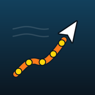

TrapLine
Record & follow your crab trap lines.
- Drive your line once while setting traps and TrapLine draws it on a satellite map or NOAA nautical chart, with a pin for every trap.
- Next trip, follow it in a 3D driving view. It beeps if you drift off the line and plays a “cha-ching!” at every trap.
- Keeps recording with the phone locked. No account, no ads, no tracking. Your lines stay on your phone.
For iPhone, iPad (Wi-Fi + Cellular models, which have GPS) and Android.